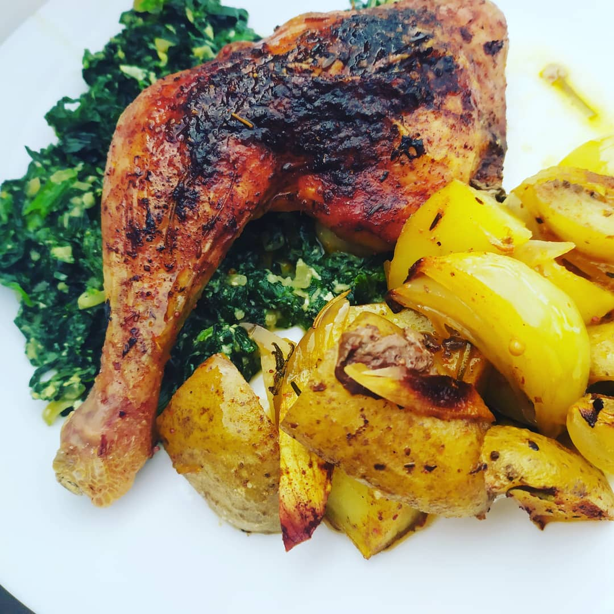

Dusený špenát podľa @wendyskova — Normy Jedál
Všechno z jednoho pekáče? Proč ne...proč by mělo jet za jedno vaření tolik plotýnek?!?!. Úspora času i energie ....no dobře....špenát se dělal zvlášť 😜
Kuřecí pečené stehno na bramborách a cibuli s rozmarýnem a smetanový špenát s vajíčkem
#kurecistehno #pecenekure #spenat #listovyspenat #dusenyspenat #cibule #cesnek #smetana #brambory #cibule #rozmaryn